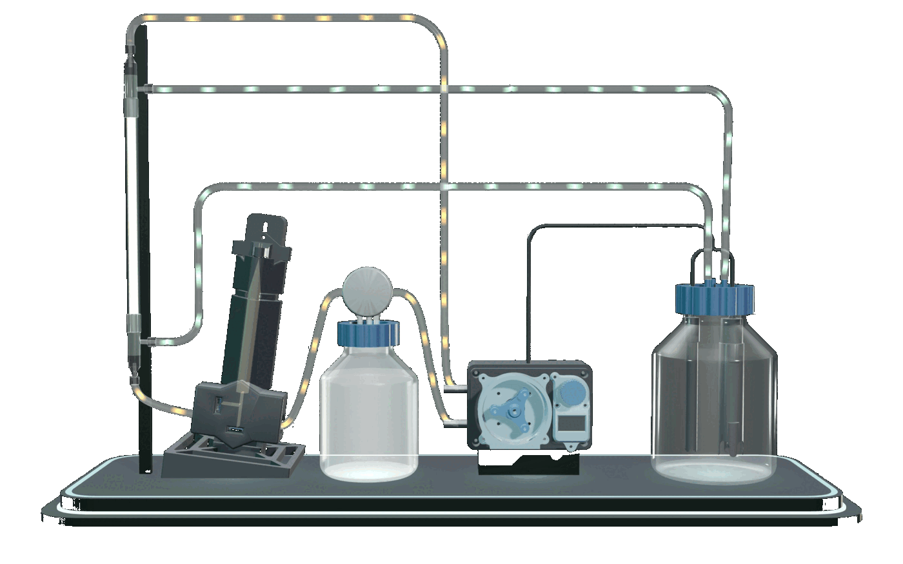
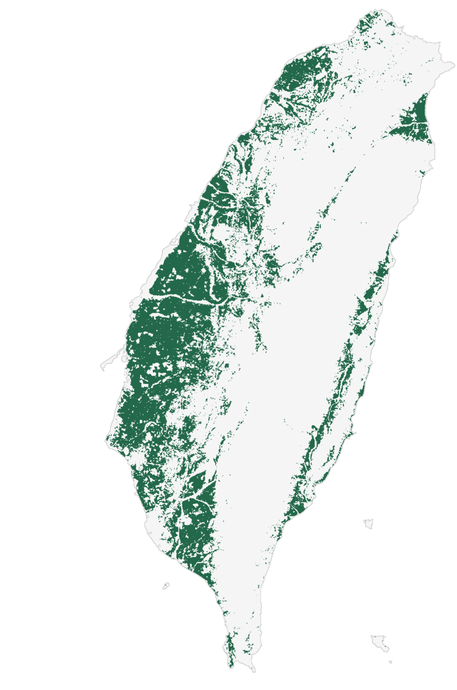
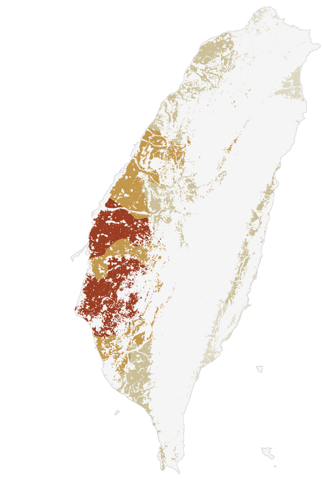
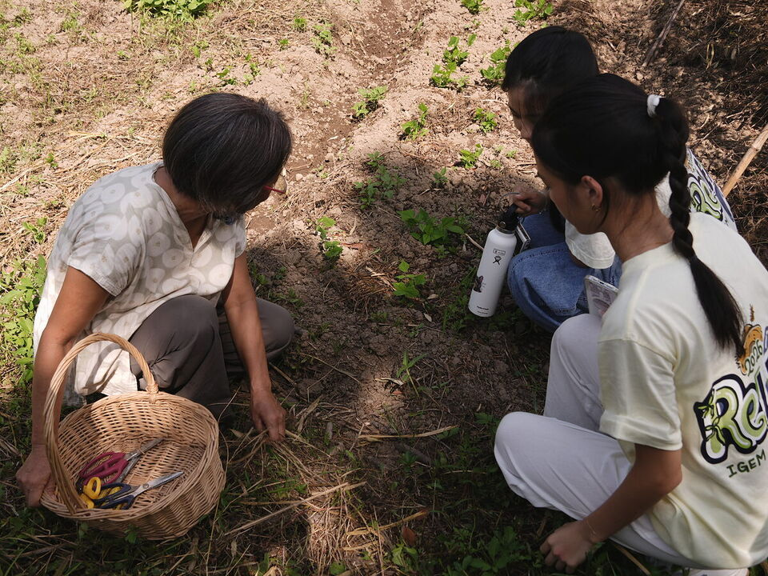
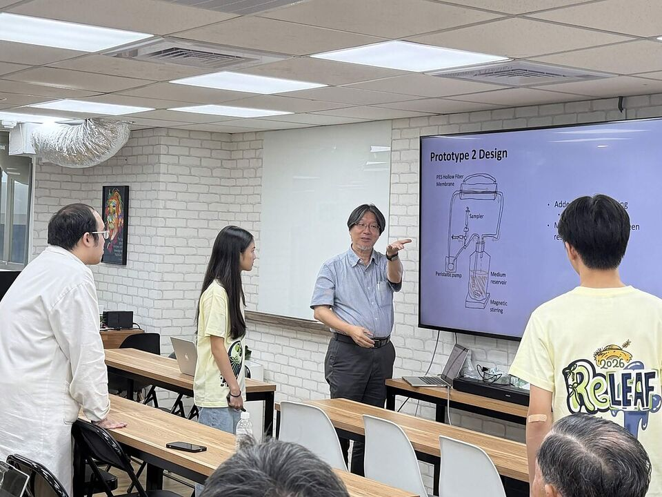
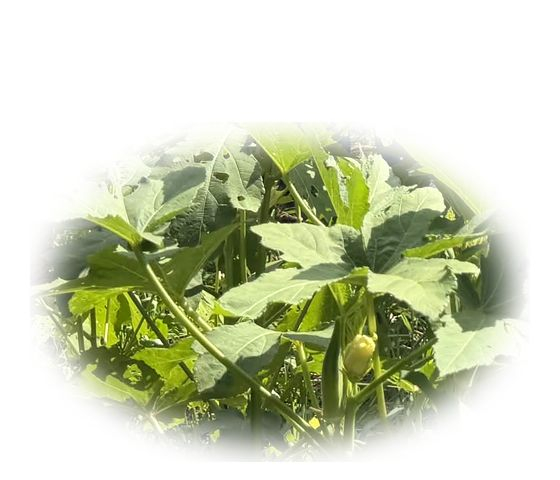
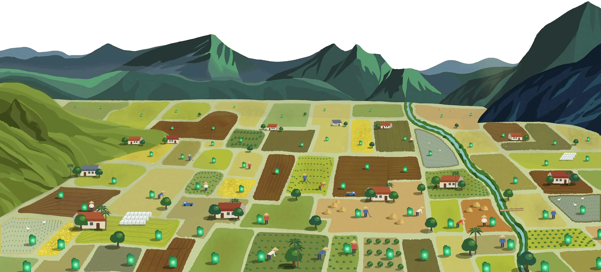
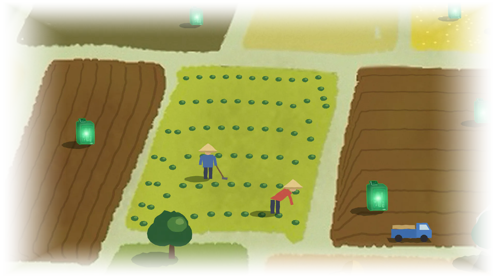

Detect stress
- Farmer visits
- Geospatial analysis
- Stress index modelling
- Plant stress assay


Empowering future farmers to combat climate change with a Stress-Responsive Optogenetic Bioreactor for Precision Plant Protection
As long as it benefits the plants and does not disrupt the balance of nature, I am very willing to try any new technology. This gives me more time to do what I love most — farming.
Since 1991 the island has warmed 0.29 °C per decade, nearly triple its earlier rate. Our climate volatility index measures how far a place swings within a year: day against night, summer against winter, and how unevenly its rain falls.
Taiwan’s agricultural regions are increasingly exposed to more extreme and less predictable climate conditions.
With 99% of farms classified as small‑scale, much of Taiwan’s farmland is managed by farmers with limited capacity to absorb repeated losses.
Where small farms and climate stress overlap, the same farmers face the greatest risk of losing a season’s work.



A forecast can give days of warning, but the stress itself begins where no one can look.
Protectants may be engineered in the lab, but getting them safely and practically to the field is another problem.
Engineered bacteria cannot simply be released into farmland, while the protectants they produce still need to be manufactured, separated, transported, stored, and delivered when they are needed.
We believe the answer has to meet five demands.
From stress prediction, protein production, separation and delivery in one integrated system.
Lights its parts in the 3D model.

Loading reactor 0%

ho1 and pcyA turn the cell’s heme into phycocyanobilin, which the light sensor needs.
Green light (520 nm) switches CcaS on in the membrane. Red light (660 nm) switches it off.
CcaS passes a phosphate to CcaR, and the CcaR dimer turns on the output gene.
The cell makes the protectant and secretes it into the medium. The output slot takes ACC deaminase, LEA14 or BoPep4.

Grounded us in real agricultural needs.

Helped us refine the science and engineering.
Showed us the barriers between production and access.



Built from the needs of one farm, one field at a time.


Toward a future where plant protection lies in each farmer’s hands.